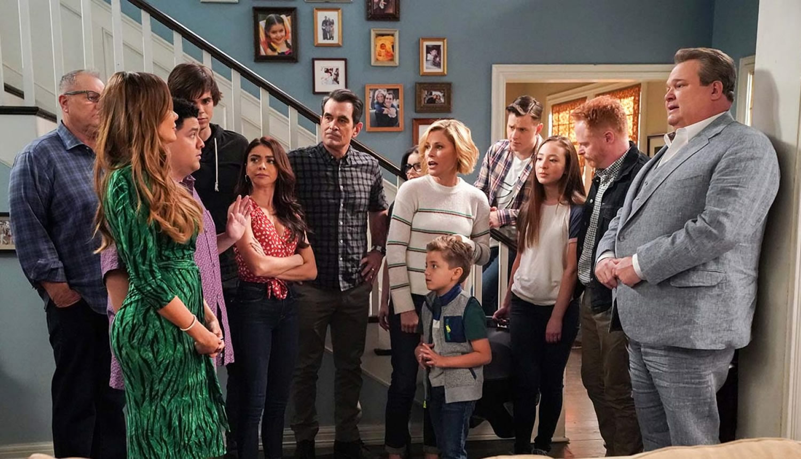
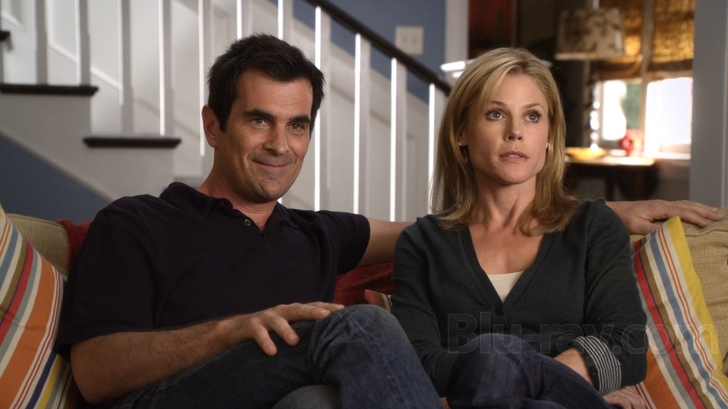

Modern Family is an American television sitcom created by Steven Levitan and Christopher Lloyd for ABC. It aired for 11 seasons from 2009 to 2020. Modern Family revolves around three different types of families (nuclear, blended, and same-sex) living in suburban Los Angeles, who are interrelated through their patriarch, Jay Pritchett, and his two adult children, Claire and Mitchell.
Lloyd and Levitan conceived the series while sharing stories of their own "modern families." Modern Family employs an ensemble cast and is presented in a mockumentary style, with the characters frequently speaking directly to the camera in confessional interview segments. As the title suggests, it depicts a modern-day tight-knit extended family; many episodes are comically based on situations that many families encounter in real life.

Jay remarried a much younger woman, Gloria Delgado, a passionate Colombian immigrant with whom he has a young son, Fulgencio “Joe” Joseph (born in the middle of the fourth season), and a stepson from Gloria's previous marriage, Manuel “Manny” Delgado.
Claire was a homemaker, though returned to the business world in the fifth season, eventually becoming the chief executive officer of her father's business, Pritchett's Closets and Blinds. Claire is married to Phil Dunphy, a realtor and a self-professed "cool dad" originally from Key West, Florida. Claire and Phil have three children: Haley, a stereotypically ditzy wild teenaged girl; Alex, the middle child who is highly intelligent, gifted, and introverted; and Luke, the offbeat only son, known for his playful, immature, and sometimes dim-witted nature. The gendered expectations of parenting are explored with Claire and Phil's family. Their relationship counters traditional male-dominated family structures by showing Claire as the family's decision maker while Phil is a “fun dad”.
Mitchell is a lawyer who is in a same-sex relationship with Cameron Tucker. Cam, from a farm in Missouri, is a former music teacher and later works as a football coach and Vice Principal. The couple have adopted a baby daughter, Lily, of Vietnamese origin. Cam is a stay-at-home dad in the first couple seasons when Lily is young. Mitchell and Cameron are legally married in the fifth season, following the Californian legalization of gay marriage.

Modern Family thoroughly explores the different parenting styles and challenges presented by modern circumstances and the unique personalities of children. Throughout the show, Claire is a "daddy's girl" with a strong relationship with Jay, while Mitch has a much stronger bond with their mother. Jay struggles to connect with his step-son Manny initially, and often ridicules Manny's preferences for luxury and lack of masculine interests. However, Jay learns to accept and celebrate Manny's unique interests and skills in theater and film.Modern Family also showed that men can be more than the stereotypic distant father figure. Modern Family showed men resisting hegemonic masculinity.

Modern Family is notable for its portrayal of queer and non-traditional family structures, primarily through the characters of Mitchell Pritchett and Cameron Tucker, a gay couple raising their adopted Vietnamese daughter, Lily. Their family dynamic was one of the first on prime-time television to center a same-sex couple navigating the challenges and rewards of parenthood, offering audiences an authentic look into LGBTQ+ family life. Throughout the series, Mitch and Cam’s relationship showcases both the unique joys and social obstacles facing LGBTQ+ parents, such as dealing with stereotypes, facing subtle forms of prejudice, and navigating societal expectations. By depicting Mitch and Cam’s journey as parents and partners in a relatable, humorous light, Modern Family has played a significant role in normalizing LGBTQ+ families in mainstream media. The show's inclusion of various family forms, from blended families to adoptive and queer families, reflects a more inclusive view of what family means today and has been credited with increasing public acceptance of LGBTQ+ families. This representation contributes to broader conversations on family diversity, challenging traditional norms and encouraging viewers to embrace different family structures as equally valid and loving.Modern Family remains a landmark series for the way it blended humor with genuine emotional insight. Its portrait of a contemporary family—messy, diverse, and deeply loving—left a lasting cultural impact and redefined what a sitcom could be.